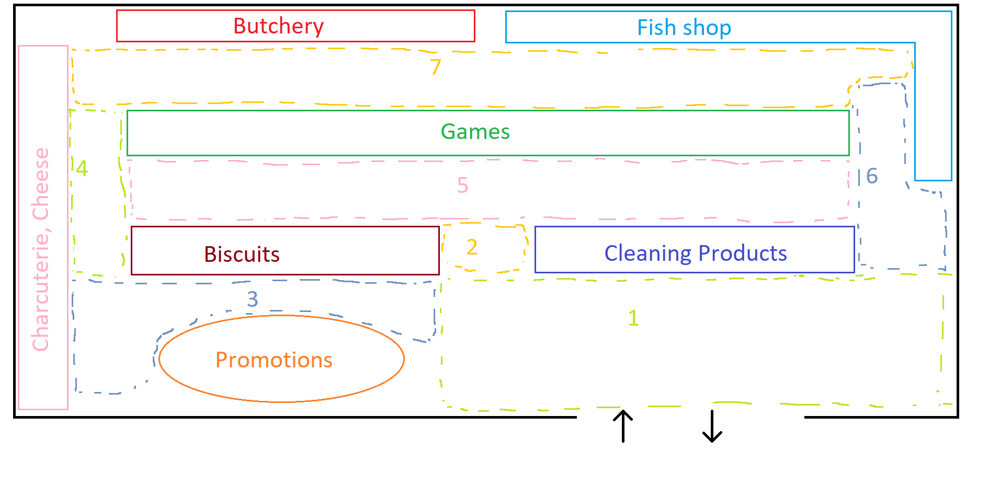
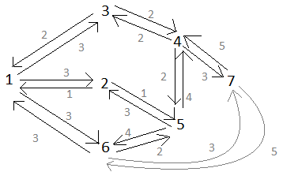

Source node
Targetted Node
Get JSON representation of the graph!
JS object representation of graph!
parse json from first button!
Get shortest path of previous graph!
Get opt path for Cleaning products and Butchery!
Example of graph from where example are run

Example of graph from where example are run
